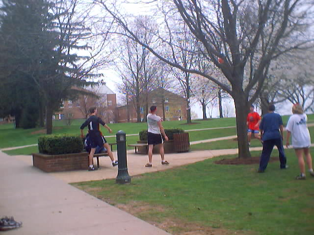

[ Main
| Schedule
| Rules
| Teams
| Message Board
| Weather
| World Cup News ]
WMC Quad Cup Soccer Spring 2001 Tournament
Here are the game reviews. If you want to see the the tournament layout, go here. The two teams with the inital BYE were Its the Water and Spida United.
SHIRTS
Also, I came up with an extremely vague t-shirt layout: front option #, front option #2 and back. Josh on the other hand is coming up with real designs that we are actually going to use for the shirt. Here are his ideas, to view right click and click save target as and save the file somewhere and i recommend opeing it with Imaging which is in your accesories folder or else it will be huge (this is like a work in progress so check back often untill 5/9): front #1 (which will have only black so disregard the grey and possibly different color scheme)...to be continued... Whoever wins if they decide to do shirts, this is the idea we are going for and the shirts are yellow for the champions and anyone else who wants one can get another color. Anyone else that wants one can pay money to get one, but I just wanted everyone to see what I had in mind. Anywho, here the tournament is:
Game A: April 23
Mrs. Wolf is Hot! 6
Elton John Fan Club 4
As it can be seen (and imagined) this was a very close game. With the new tournament rules on scoring, there were a lot of goals that previously would have counted but were refused this time. We had external voices of authority as Ben was on the field. The temperature was hotter n hell and this definately wore on the players. Elton John Fan Club started off with a lead of 2-0 but this was quickly rectified with the score at half being 3-3. Despite efforts on Elton John Fan Club, they just couldn't get any substantial offence going. Defence was good on both teams. Andy M. pulled off two heel shots (each in separate halves) which really gave Mrs. Wolf is Hot! the lead they needed to finish the game. With 5 minutes, score was 4-5 but a goal by Keagan sealed the fate of Elton John Fan Club. Good game though and now it cannot be said that Elton John Fan Club was unfairly stacked. Mrs. Wolf is Hot! will now go on to battle their nemesis, Its the Water for the semi-final match. Here are the numbers:
Stats: Mrs. Wolf is Hot!: Keagan had 3 goals and Andy M. had 3 goals and 1 assist and Aramus had an assist too.
Elton John FC: Lee had 1 goal and an assist and Jamie had 3 goals.
Game B: April 25
Sexy Bitches FC 8
Team 4 2
This was a very interesting game. Chris P. hurt his ankle in the first 3 minutes taking a shot which was blocked by Matt M. Since he thought it was broken, campus safety came. There are now rumors about getting written up for Quad Cup because it is unsafe. I will have a list of people that have hurt themselves walking on campus and present it to them when they come, if they do, and ask them why they don't write up the whole campus. Don't worry all will be alright, just as chris' ankle which it turns out is a sprain. Alan S. took Chris' place on Team 4 but missing their key player, the team just couldn't get it together. Ian at re-start of game (which was 22.5 minute halves now) tried to head the ball and missed and it came back up and hit him in the face. He was alright though but doesn't want to kiss any more balls that violently. Sexy Bitches FC demonstrated their ability to work together and to run like there was no tomorrow. Right at the call for time at the end of the game, Jorges let lose a kick which put the ball on a collision course with a blazer going a little too fast. The ball got run over after bouncing under the side. The ball will not be used in any more games, I think. Again, if you see Chris, slap his ass and tell him how good he was for Quad Cup.
Stats:Sexy Bitches FC: Matt had 3 goals. Rob had 2 assists and 2 goals. Dan Saul also had 2 assists and 3 goals.
Team 4: Brian had 1 goal (after which he yelled like a 5 year old "Wee, I got a goal!"). Phil had 1 goal too.

A moment from Game B.
Game C: April 27
Mrs. Wolf is Hot! 5
Its the Water 4
Well, this could've been this most intense game of soccer yet at the quad. Both teams seemed strong and Its the Water sprang to a 2 point lead pretty fast. By the half though the score was tied 3-3. All players were making some incredible plays. I can't even list what all happened throughout but here will be things pertaining to goals scored. With 10 minutes left in the last half, Its the Water scored to tie the game at 4-4. At 9 minutes and 30 seconds, Dan had an open goal but waited to long for the shot and allowed Its the Water to hold the team off a bit longer. The game then went into overtime. The protocol for this is a 5 minute break with a 10 minute overtime being played sudden death (or golden goal, whatever you want to call it). Josh seemed to have many opportunities to score but the defense always crashed down hard. There was a disputed shot with Dan involving a pass through the goal which was not allowed (see rules for tournament play on main page). A shot by Josh 5 minutes into OT looked good but it became aparent that if the ball had not bounced it would've hit a post therefore nullifying the goal. We needed a good clean goal to secure the winners place in the final game. Aramus made this goal, his third, with an assist by Keagan which seemed to take the other team by surprise with only 30 seconds left in OT play. Pretty crazy game but Mrs. Wolf is Hot! definately earned their place in finals. Good game though to Its the Water who had an incredible team also, just loosing sexy steve for the second half might've hurt them worse than they would've expected, especially playing with no subs against a team with 2. But, this is quad cup and thats how it is. Good game to all.
Stats:Mrs. Wolf is Hot!: Aramus 3 goals, Andy M. 1 goal (not a heel shot this game though). Keagan had a goal and an assist.
Its the Water: Craig had 1 goal and got the shit beat out of him. Maciej had 2 goals and Clint had 1 goal.
Game D: May 2
Sexy Bitches FC 10
Spida United 5
Well, this was actually a really good game. Sexy Bitches had trouble getting going with Spida United playing without Tyler pretty damn good, especially on defense. Very impressive job in the heat and all. Sexy Bitches made full use of their one sub while Spida United trucked along doing some serious damage and even getting the game tied at 4-4 at the half. Tyler showed up at this point but didn't want to play due to track conferences this weekend. When the Sexy Bitches finally started picking up the pace on the weary Spida team, Tyler came in with 15 minutes left. But at this point, Sexy Bitches had got a 3 point lead and just kept on increasing it. Goal highlights were 2 of Dan Saul's shots: 1 was from extremely far away and definately the best distance with the tournament rules, 2 was a steal from Joe M. in front of the goal for a goal. Todd played a great game giving more than I have seen anyone give. Mike and Joe were a great combo on D and Matt W. definately showed some people up. Matt M. didn't get any goals but made some great plays as always. Rob, Jason, and Jorges as always, being veteran quad players, showed they knew what was up and impressed the hell out of everyone. All very good plays with everyone kicking ass. Good luck to Sexy Bitches FC in the finals.
Stats:Sexy Bitches FC: Dan S. with 5 goals and 1 assist. Rob had 3 goals and one assist. Jorges had 2 assists (which were incredible) and Jason had 2 goals.
Spida United: Matt W. had 1 goal and 2 assist (which were some wild plays to Todd in front of the goal. Todd had 4 goals.
Game G: May 3
Elton John FC 10
Team 4 6
Well, please excuse the lateness of this report but i was busy with stuff. Unfortunately the thoughts on game are a little vague by now. I do remember though that everyone played great. Elton John FC was missing most of their team so recruited Matt W. and Flannesy (sorry about spelling). The other team recruited a bare foot Maceij in the second half to unleash some destruction and give some people a breather. Flannesy was Elton John FC's secret weapon on offense. They used her to kick long balls at the goal and see if she could run fast enough to kick it in. Unfortunately, Team 4's defense was pretty damn good even though they were missing the injured Chris P. Brian for Team 4 had a little better game than the last but still wasn't up to par with any of his in season performances. Phil made some great plays and didn't injur anyone. Lisa was again as always a force to be reckoned with. Ian... well, some spectators thought it was the most active they had ever seen him and he even got an assist. Right before the first half the game was tied at 3-3 from an equilizer from Lisa intill Matt got one in to but Elton John up for the second half. Second half Lee was on fire but failed to do the airplane thing and Ben was placed permanently on D as his offensive skills were not up to par with Flannesy (he was able to score a beautiful goal from an incredible cross from Lee). All in all, I am very happy with all the people that came out and it was a pretty fun game even though the alcohol failed to materialize at the game. Congradualtions and Team 4 shouldn't feel bad about getting last since the teams weren't the real teams.
Stats:Elton John FC: Ben got a goal. Lee had 5 goals and Matt had 4 goals and 3 assists and Flannesy had 3 assists and lots of running.
Team 4: Lisa had 1 goal and an assist. Brian had 4 goals and Maceij had 1 goal and Ian had an assist.
Game F: TBA
Spida United 11
Its the Water 10
Because I am lazy and he was there, Andy Messmore has taken care of this write-up (yes, this is what happened just from a certain slant)...Well here was the game for one of the LOSER brackets....not Mrs Wolf is
Hot mind you because they are in the final game. The game was pretty intense the entire time and it seemed that both teams were fairly evenly matched.� There were indeed a few very notable things about the game which the public should be informed about.� One of them was the tanning girl in the middle of the playing field who refused to move but that's all I'll say about that right now.� As the game began an initial goal was ripped in by the Spida United (really cool name for the team) and Ben began to inform me that this meant they would win.� I was skeptical as Craig made a break to the net but then decided to be French and hit the shot so lightly that some guy from Malaysia had time to run in and block it (keep in mind I don't know where Malaysia is but I think it's far). So instead of tying the game Susan(Craig) managed to allow Spida United to keep the lead.�! Most of the game progressed in this manner as the Spida United was on top almost the entire time...kind of like your mom. At one point Susan did tie up the game for good old It's the Water but then proceeded to attempt the patented Messmore heel shot (not only does he owe me $20 for use of that but he missed and that's just insulting).�About halfway through the 2nd half the game went 3 on 3 because Josh Startt left in a fit of tears.� No one was really sure why he was crying but someone did mention his lack of cherrypicking as a culprit.� It's the Water took it's first lead of the game after this change from a looooong shot from Steve that even�Ben Neely couldn't dispute but no sooner did that happen when all of a sudden Tyler put a "goal" in (notice the quotation marks on that because the only reason it was allowed is because Clint felt bad for him).� So after a few more back and forths the game was won by Spida United although It's the Water came in strong at the
end.
� Stats are as follows:
It's the Water:
Goals: Craig 3, Clint 3, Josh 3, Steve 1
Assists: Clint 1
Spida United:
Goals: Matt Wolfe 5, Tyler 4, Todd 2
Assists: Matt Wolfe 2, Tyler 1
Times Matt Wolfe got the ball raped from him: 10
Times a French person (Craig) stole the ball from Matt: 5
Times a person in bare feet (Josh) stole it: 1
Times the tanning girl was almost trampled/hit by something: 5
Game E CHAMPIONSHIP GAME
: September ??
Mrs. Wolf is Hot!
Sexy Bitches FC
This is the tournament format:
1 -----
C -
4 ----- -----_
A -------- _
5 ----- E _ _____
2 ----- _
D - _ winner E: first place
3 ----- ----- loser E: second place
B -------- winner F: third place
6 ----- loser F: fourth place
LC ----- winner G: fifth place
F -----
LD -----
LA -----
G -----
LB -----